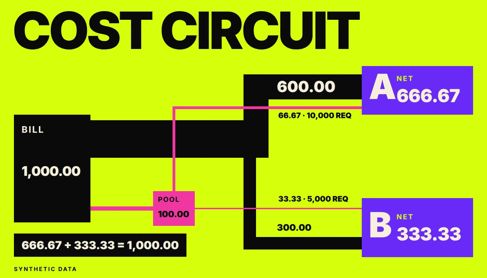

Dashboard · FinOps · Cost allocation · FastAPI · React · 2026-11
Where Did the Shared Cloud Bill Go, and Which Product Should Own Each Cent?
CostCircuit: a synthetic cloud bill allocation workbench. It reconciles a detailed bill to the provider total on two bases, classifies every line as direct, shared or unallocated under approved, time-stamped rules, splits shared pools with an exact remainder rule, and names the spend that has no owner instead of spreading it. Nothing is written to any cloud account. Nothing here is real data.

Everything is synthetic: the bill, the provider, the products, the tags and the unit counts are invented, and the fixture is hand-specified and checked against an independent Python reference. The static demo computes in the browser over a bundled fixture. The database and the API run in CI only and are not hosted. The page cannot import, approve rules or create budgets, frame pacing was not measured, and Lighthouse ran on localhost with simulated throttling. Open findings are listed in the limitations.
01 — The problem
A shared cloud bill does not say who spent what. Untagged, unmapped and ambiguous lines, credits that belong to a product, commitment fees, and rules that change mid-year all make a simple split wrong, and a total that does not reconcile to the provider statement should block any split at all.
02 — What I built
Per-line classes under approved rule versions as of a run stamp, exact pool shares with a deterministic remainder, gross, credit and net per product, cost per unit on the exact rational, allocation coverage, budget variance, a trailing-mean forecast, daily anomaly flags and a showback export with a spreadsheet formula guard. The page shows the bill as a circuit whose trace widths are the charges.
03 — How it was built
- 01
The contract first
One contract fixes the entities, the six line classes, the rounding rules, the role table, the error codes and what is out of scope, before any code computes a figure.
- 02
A hand fixture
A 100,000 bill with direct A 60,000, direct B 30,000 and a 10,000 pool at usage weights 2 to 1 gives pool shares 6,667 and 3,333 and nets 66,667 and 33,333. The expected values are written before the code exists.
- 03
An independent reference
A standard-library Python calculator derives every figure. PostgreSQL, the API and the browser engine are each compared with it, and the browser engine is compared with the committed golden file byte for byte.
- 04
Spend with no owner gets a name
Missing, unmapped and ambiguous tags and a pool with zero weights stay unallocated with a reason. Coverage excludes credits and is shown as undefined, not zero, when nothing was charged.
- 05
Evidence
84 browser tests pass, axe finds no violation in the 18 route and state checks, and Lighthouse reports performance 100 and accessibility 100 on the landing page and the workspace in both presets.
04 — Results
Measured on the synthetic release candidate (commit 2e5ac48): manifest 48 cases with 0 failures (SQL 42 pass and 2 partial of 44, API 33 pass and 2 partial of 35, reference 33 pass), 55 API tests, 80 unit tests, 84 browser tests, a 7 step scripted journey. Lighthouse on localhost with simulated throttling: performance 100, accessibility 100, layout shift 0, largest contentful paint up to 1395 ms. These describe generated data and this code; they say nothing about any real cloud bill.
05 — What I'd do next
- Publish the static demo and read the mobile and tablet compositions again.
- Fix the open composition findings: the mobile first screen, small circuit labels and the circuit with more than two products.
- Measure frame pacing on a stated device and keep the CI artifacts once storage allows.